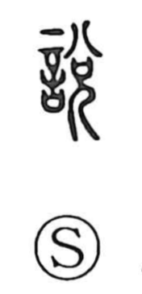

説

Uncategorized
Kun: toku, tokasu, tokeru | On: setsu, zei
to explain ・ to persuade ・ theory ・ doctrine
Explanation
Originally written 說, the character combines 言, the solemn words or oaths addressed to the gods, with 兌, which signals the on-reading but also carries a sacred image. Shirakawa reads 兌 as the gentle descent of the divine breath in answer to a shaman’s petitions—here, 兄 evokes one who serves the gods—capturing the rapt, possessed state of the medium. The related form 悅 (悦) shows the shaman’s heart in that moment of divine ecstasy. From this scene of praying to and persuading the deities, 說 broadened to mean persuading people, and by extension explaining and stating; it was even used in place of 悅 with the sense “to be glad.”